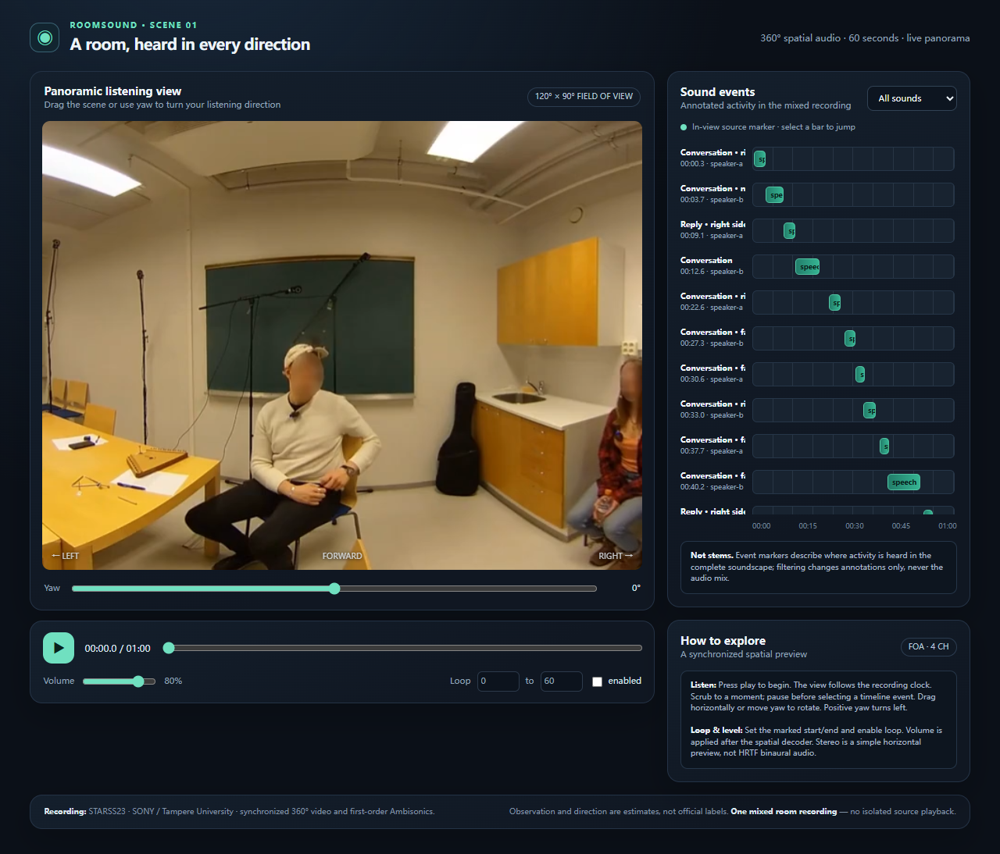
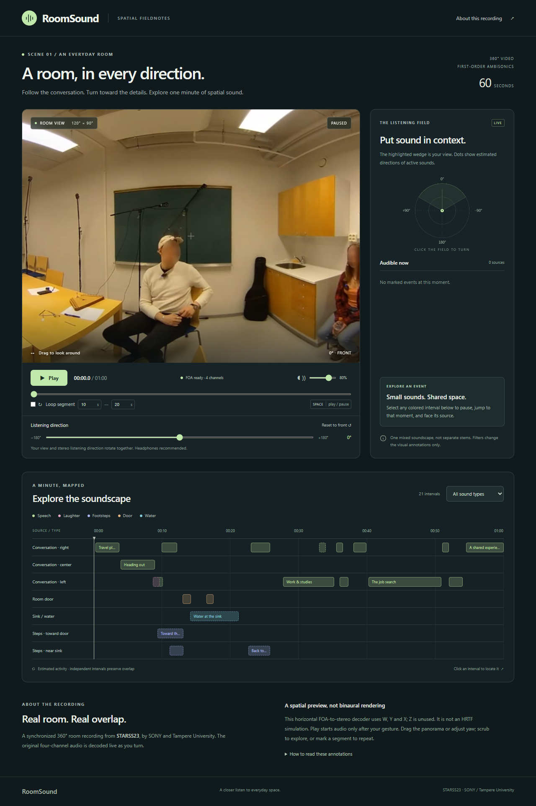

gpt-6-luna

输入60秒真实房间全景视频与同步四通道空间录音。Agent需要判断哪些声音实际发生、发生在何时何处，并生成随视角改变实际声音的可交互网页。
真实开源素材一次最终提交只读取证工具无原生音频输入reasoning = high运行日期 2026-10-29 · 两个网关别名各运行一次，提交前可取证，交付后无模型自检或返修。
STARSS23 / fold4_room15_mix008 的源时间60–120秒；由SONY和坦佩雷大学发布，源视频的人脸模糊由数据集作者完成。派生输入仍是原始事件与录音，未合成故事或旁白。
人工预览：真实全景视频＋固定朝向立体声。该预览不等于模型原生听到音频；模型通过抽帧和共享声音工具取证。
| 模型可用输入 | 格式和作用 |
|---|---|
| scene.mp4 | 60秒静音全景，1920×960 / 15fps；必须在网页中实时显示。 |
| scene-foa.wav | 24kHz PCM16，W/Y/Z/X四通道，供网页实际空间解码。 |
| scene-mono.wav / scene-stereo.wav | 单声道和固定方向试听，不能代替FOA实时解码。 |
| 初始帧与工具 | 先提供1、20、40秒三帧；可调用video_frames和audio_evidence。音频工具提供ASR、YAMNet分类和FOA方向能量估计，均非官方答案。 |
下载静音视频 · 下载四通道FOA · 素材规格与SHA256 · 原数据许可
L = 0.5 × (W − X × sin(yaw) + Y × cos(yaw)) R = 0.5 × (W + X × sin(yaw) − Y × cos(yaw)) 主音量在解码之后应用；Z不参与这个水平立体声预览。
# RoomSound / A real spatial-audio scene explorer
Build a polished, useful web app for exploring this real 60-second room recording. The input is a synchronized 360-degree video and four-channel first-order Ambisonics audio from STARSS23 (SONY / Tampere University). This is a media-understanding AND web-implementation task. Recover audible events and their locations from the supplied evidence tools. Official annotations are not available to you.
The website itself must make sound, space, video, and time interactive. Do not replace it with a requirements summary or a conventional list of audio players. Do not claim isolated source playback: this is a mixed soundscape, without individual stems.
## Assets and perception
Immutable assets are `/media/scene.mp4` (silent 1920x960 equirectangular video), `/media/scene-foa.wav` (24kHz, PCM16, channels W,Y,Z,X), `/media/scene-mono.wav` (W channel), and `/media/scene-stereo.wav` (fixed yaw0 stereo preview). Video and all audio start together at task time0 and last60s. No autoplay. Use an explicit user gesture to start audio.
You can inspect exact video frames, real ASR, a general pretrained sound classifier's uncertain predictions, and raw signal-derived directional energy. These tools do NOT expose official labels. The gateway cannot accept native audio; this is explicitly a shared-perception-tools-assisted agent task. Cross-check evidence. Tools can misclassify, miss overlap, and confuse reverberation with sound direction.
## Product behavior
1. A panoramic viewport that can rotate horizontally through360 degrees using a yaw slider and dragging. Use an equirectangular crop with horizontal field of view120 degrees and vertical field of view90 degrees, centered at elevation0. This defined projection makes marker placement reproducible. The source panorama center is azimuth0; positive azimuth is LEFT, so source x=(180-azimuth)/360*1920. Panorama seams must wrap cleanly. Use a canvas or equivalent, not a static screenshot. Keep viewport aspect ratio4:3.
2. Actual audio must rotate with yaw. Implement the following simple horizontal FOA stereo decoder using the original four channels, not a panner on mono or the fixed stereo preview. For yaw a in radians, L=0.5*(W-X*sin(a)+Y*cos(a)); R=0.5*(W+X*sin(a)-Y*cos(a)). Z is unused in this horizontal decoder. Apply master volume after decoding. This is a simple stereo spatial preview, not an HRTF binaural simulation.
3. Play/pause, scrubbing, master volume, and a marked segment loop. Audio and video must stay aligned after seeking, pausing/resuming, changing yaw, and looping. Never play the mono/preview audio in parallel with the FOA decode. The slider uses the video clock. Start no audio before the user presses Play.
4. Discover audible events from the recording and create an event timeline. Use the ontology: speech, clapping, telephone, laughter, domestic, footsteps, door, music, instrument, water, bell, knock. Merge the dataset's two speech categories to `speech`; no demographic inference is required. Do not mark a visible actor or object as sounding just because it is visible. Represent simultaneous sound sources independently. At least include every event class you find evidence for; uncertain details should be acknowledged.
5. Show markers for currently audible events, at their current world direction. Markers follow the supplied trajectories, disappear outside their active interval, and hide outside the viewport. Clicking an event in the timeline pauses, seeks to the midpoint of its first interval, and recenters the viewport on that event. Filtering affects both timeline and markers, but must not pretend to separate the mixed audio.
6. A clear professional layout, a usable timeline, readable labels, responsive layout, a concise explanation of controls, source attribution, and an evidence note distinguishing observation from inference.
## Deliverables and stable interface
Work only inside your project. Use local HTML/CSS/JavaScript; no network/CDN dependencies. The server supplies immutable `/media/*` assets and serves your own project files. You may use native WebAudio and canvas. Submit `index.html`, implementation files, `events.json`, and `evidence.md`. Submit once without executing, previewing, testing or revising your product. Independent evaluation happens after your submission and is never returned to you.
`events.json` must be `{ "version":1, "events":[...] }`. Each event has:
`{ "id":"unique-id", "class":"speech", "source":"your-consistent-source-id", "start":1.2, "end":3.4, "trajectory":[{"time":1.2,"azimuth":-45,"elevation":8},{"time":3.4,"azimuth":-30,"elevation":8}] }`.
All times are clip-relative seconds. Use separate events for separated audible intervals. Coordinates are degrees, azimuth[-180,180], elevation[-90,90]. Interpolate direction linearly along the shortest azimuth arc; clamp to the closest trajectory endpoint outside its keyframe range. For stationary sources one keyframe is sufficient. Event activity is start<=t<end. Source IDs are your own stable IDs, not official actor numbers. Do not invent precision you cannot support in evidence.md.
Use these public DOM hooks; styling and surrounding structure are your choice:
- `[data-testid="scene-video"]`: the actual HTMLVideoElement, muted. It may be hidden if a canvas displays it.
- `[data-testid="viewport"]`: the visible4:3 panorama surface and marker container. Its bounding box is the exact viewing rectangle.
- `[data-testid="play"]`: toggles play/pause.
- `[data-testid="seek"]`: range input, seconds0..60, responds to input/change.
- `[data-testid="yaw"]`: range input, degrees-180..180; increasing turns LEFT, responds to input/change.
- `[data-testid="volume"]`: range input0..1, default0.8, responds to input/change.
- `[data-testid="loop-start"]`, `[data-testid="loop-end"]`: number inputs in seconds; `[data-testid="loop"]`: checkbox.
- `[data-testid="filter"]`: select, values `all` and ontology class names present.
- `[data-event-id="ID"][data-role="event"]`: clickable visible timeline entry for each event in events.json.
- `[data-event-id="ID"][data-role="marker"]`: visible marker centered at the projected source position when active and in-view. Its bounding-box center must match the source; put long text in an offset child if needed.
Projection: d=wrap(azimuth-yaw) into[-180,180); visible if abs(d)<60 and abs(elevation)<45. Marker x/width=0.5-d/120, y/height=0.5-elevation/90. Keep clipping and seam behavior consistent. Update immediately when paused and seeking/yaw-changing, not only while playing.
## How this is evaluated
50 points assess your inferred audible event activity, spatial directions and event boundaries against held-out official annotations. 50 points assess the actual rendered app: live panorama motion, marker geometry, event navigation/filtering, transport/loop synchronization, real PCM audio decoding and volume behavior, responsive layout and evidence. A beautiful page with incorrect events cannot receive full marks. Missing data/files are failures, not implicit success.
Browser audio is measured from actual output; controlled audio fixtures may be used to verify the prescribed decoder. A variable claiming "playing" or "yaw" is not evidence of sound. The official annotations, reference solution, decoder fixtures, and other candidates are unavailable. Do not attempt to access them. Use evidence and implement the requested product.
## Single-delivery protocol (overrides iterative workflow)
You are starting with an EMPTY project. You have ONE product-generation and delivery opportunity. Before submission, you may call the read-only video_frames and audio_evidence tools in up to TWO response batches (12 calls total). Independent calls should be batched together. Three initial reference frames are supplied; you may request up to9 additional frames (12 total). No browser, shell, syntax check, draft write or product preview tool is available.
Use submit_project ONCE, providing ALL final text files with full contents. Its first invocation ends your run, even if files are incomplete or incorrect. It is not an incremental write tool. You may submit early. At the latest, after the second evidence batch, your next response must submit the finished project. No product repair, self-test, evaluator feedback or second submission is possible. Write honest evidence notes without claiming you ran tests.
| 协议 | 本轮限制 |
|---|---|
| 产品交付 | 每模型一次submit_project，首次提交即封存。 |
| 交付前取证 | 最多两批自适应取证、12次工具调用、3次模型请求。 |
| 视频预算 | 总计12帧（含3初始帧）。 |
| 音频预算 | 共享ASR / YAMNet / FOA信号分析，仅提供估计。 |
| 禁止候选返测 | 模型没有浏览器、shell、草稿写入、执行、自检、评分反馈或返修工具。 |
| 输入能力边界 | 网关不接受原生音频；这是工具辅助的多模态agent交付测试。 |
| 评分 | 满分 | 验证内容 |
|---|---|---|
| 声音事件感知 | 50 | 类别活动20、类别与方向联合20、事件片段10；对照官方标注。 |
| 实际网页实现 | 50 | 全景、标记、导航筛选、同步循环、真实PCM解码和音量、布局及证据。 |
| 模型 | 总分 /100 | 感知 /50 | 实现 /50 | 模型请求 | 取证调用 | 视频帧 | 耗时 |
|---|---|---|---|---|---|---|---|
| gpt-6-luna | 69.30 | 21.30 | 48.00 | 2 | 4 | 7 | 1.94分钟 |
| gpt-6.1-sol | 83.24 | 33.24 | 50.00 | 3 | 5 | 12 | 11.31分钟 |


原提交字节保留在records与结果包中。Pages部署副本仅将 /media/ 改为相对资源路径，未修复模型代码；逐文件变更与哈希可核对。
耗时包含网关、传输、工具和最终生成，不能当作纯模型速度。每个模型一次运行，不表示稳定排名。
按实际记录顺序浏览初始证据、每次模型请求、调用参数、工具返回和最终提交。保留错误查询与原始响应；不补写未记录的内部推理。
| 模型 | 轨迹记录 | 取证调用 | 初始/追加视频帧 | 一次提交 | 原始记录 |
|---|---|---|---|---|---|
| gpt-6-luna | 8 | 4 | 7 | 1 | trace.json |
| gpt-6.1-sol | 10 | 5 | 12 | 1 | trace.json |
| 模型 | 类别活动宏F1 | 类别＋方向联合F1 | 事件片段匹配 | 实现问题 |
|---|---|---|---|---|
| gpt-6-luna | 30.41% | 59.02% | 7/26 | 音画同步2/4，其他实现检查通过。 |
| gpt-6.1-sol | 60.80% | 75.59% | 14/26 | 预定实现检查全部通过。 |
共同音频分类器和局部方向估计本身可能漏掉或混淆重叠声音，不能将其误差直接归因于模型的原生听觉能力。
本测试只覆盖一个公开片段、每个网关别名一次，未做模态消融，不能证明训练数据未见或两模态缺一不可。底层模型身份未独立认证。
| 下载 | 包含内容 |
|---|---|
| 原始数据包 · ZIP | 本case所用完整源视频/源音频及元数据、任务派生输入、逐文件SHA256；不代表整个上游数据集。 |
| 完整结果与复现包 · ZIP | 题包、工具、原始响应、抽帧、封存代码、评分器、隐藏答案及评分证据。 |
| 实际题面 / 协议 | 模型实际约束；中文展示不能覆盖英文精确定义。 |
| 完整报告 / 评后公开真值 | 答案仅用于独立评测；不能纳入重测时的模型输入。 |
| 评前冻结 / 部署变换清单 | 核对输入、评分器和原始交付未发生变化。 |
| 仓库数据目录 | 归档大小、SHA256、原始成员清单与来源。 |